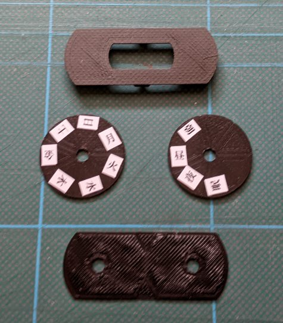
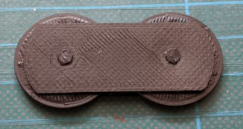

お薬メモ
「夜の薬、飲んだっけ？」を防ぐための、ダイアル式のメモです。薬の袋に貼って使います。
飲んだときに、ダイアルを合わせるだけ
薬の袋に両面テープで貼り付けます。薬を飲んだら「曜日」と「時間帯（朝・昼・夕など）」のダイアルを回して合わせておく。それだけです。次に飲むとき、最後に飲んだのがいつか一目で分かります。

工夫したところ
ディスクは7等分で、曜日と時間帯のダイアルを回すと文字が中心に来る位置で少しロックがかかるように調整しました。電池も電気もいらない、プラスチック成型だけの単純な作りです。ピルケースへの入れ替えや、お薬カレンダーへのセットといった手間をなくしたかったのです。


家族で使う場合は、薬をあげたかどうかが共有できます。我が家では犬の薬の袋に貼って使っています。2022年、発明協会の発明コンテストで奨励賞をいただきました。